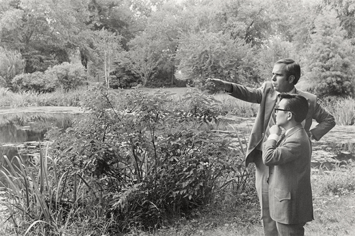

The Missouri Botanical Garden is a gem in the heart of St. Louis. Covering 79 acres, MOBOT opened its gates in 1859. But it wasn’t until more than a century later, in 1971, that it truly started blossoming into the internationally respected center for botanical research, education, and conservation that it is today. That was the year that a 35-year-old botanist, Peter Raven, assumed leadership of MOBOT. He would grow the institution from a historical garden into a thriving hive of botanical scholarship. Raven passed away at age 89 on April 25.
Anyone who has been lucky enough to visit the Missouri Botanical Garden has walked in the shade of Raven’s legacy. Under his leadership of the garden, which ended with his retirement in 2010, he not only expanded the size of the herbarium, he opened several special sections of the facility. These include the well-known Japanese Garden, the Doris I. Schnuck Children’s Garden, and the William T. Kemper Center for Home Gardening, where this author may or may not occasionally munch on freshly picked herbs as he passes through. “Peter Raven didn’t simply lead the Garden; he redefined what it could be,” said June McAllister Fowler, chair of the Garden’s Board of Trustees in a statement announcing Raven’s death. “His vision elevated it to a world-class institution while deepening its roots in St. Louis. He believed the Garden should serve its community as much as the scientific world, and that legacy is visible across our city today.”

EXPANDING MOBOT: Raven and Koichi Kawana, a University of California, Los Angeles, artist and environmental designer, discuss plans for the Missouri Botanical Garden's 14-acre Japanese Garden, which was dedicated in 1977. Courtesy of the Missouri Botanical Garden.
Raven also extended the reach of the garden outside the bounds of St. Louis. A botanical researcher in his own right, he initiated collaborative scientific and conservation projects with botanists in China, Peru, Madagascar, and beyond.
Before assuming the helm of MOBOT, Raven conducted research and taught at Stanford University, collaborating frequently with biologist and environmentalist Paul Ehrlich, who coauthored 1968’s The Population Bomb with his wife Anne. Famously, Raven and Ehrlich published a paper in a December issue of the journal Evolution in which they coined the term “coevolution.”
Read more: “The Female Artist Who Showed How Plants and Insects Relate”
“One approach to what we would like to call coevolution is the examination of patterns of interaction between two major groups of organisms with a close and evident ecological relationship, such as plants and herbivores,” the duo wrote in “Butterflies and Plants: A Study In Coevolution.”
Raven collected honors enough for two lifetimes, both during his leadership of MOBOT and after his retirement. These include a MacArthur Fellowship, a National Medal of Science, and being named a “Hero for the Planet” in Time magazine in 1999.
As a resident of St. Louis, I mostly remember him as a person who made our city just a bit more beautiful. 
Enjoying Nautilus? Subscribe to our free newsletter.
Lead image: Courtesy of the Missouri Botanical Garden